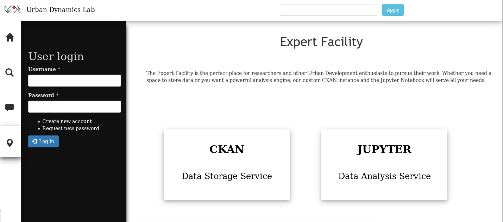

This represents the User Manual for the Urban Dynamics Lab Web Platform. It consists of a detailed guide explaining the various aspects and pages of the Web Platform to users, appended to annotated screenshots of each page, for added clarity.
Our site consists of six main pages:
- Homepage
- Password Reset Page*
- Create New Account Page**
- Search Page
- Forum Page
- Expert Facility Page
*Note that 2 and 3 are only accessible from the Homepage, or when a User hasn’t logged in – in which case they are accessible from every page. In practice, however, users generally deal with logging in at the home page, hence why they’re both listed as subpages of the homepage.
Landing Page
Users are always initially landed onto the Home Page, which consists of the following:
- Menu - a menu down the left side of the interface, consisting of four buttons: Home (which redirects the user to the same page / refreshes the page), Search (which takes the user to the search facility), Forum (outline of a speech bubble - which takes the user to the forum facility), and Expert Facility (location icon - takes the user to the page where they’re prompted to choose between CKAN and Jupyter).
- User Login -the user login form located adjacent to the Menu, prompting the user to fill in their details (username and password), and then submit using the login button. Alternatively, there are links to sub-functionalities (create new account, request new password). “Create new account”, provides the user with access to a form requesting their basic details, upon submission, they can immediately access their newly-made account. “Request new password” prompts the user for their email address, so that a new password can be emailed to them.
- Highlights slideshow - the highlights slideshow in the top portion of the main content area, shows a number of concepts/ideas related to UDL . For example, we’ve placed sample data analysis visualisations there, alongside various images related to UDL’s aims and interests e.g. Big Data.
- About UDL and How To Use section - the bulk of the main content area is taken up by content giving a brief background of what UDL aims to accomplish and background about the Research Group, as well as an introduction to the web platform and what is available on the web platform.
Search Page
From the Search Page, the following are available:
- Menu -a menu down the left side of the interface, consisting of four buttons: Home (which redirects the user to the same page / refreshes the page), Search (which takes the user to the search facility), Forum (outline of a speech bubble - which takes the user to the forum facility), and Expert Facility (location icon - takes the user to the page where they’re prompted to choose between CKAN and Jupyter).
- User Login - the user login form located adjacent to the Menu, prompting the user to fill in their details (username and password), and then submit using the login button. Alternatively, there are links to sub-functionalities (create new account, request new password). “Create new account”, provides the user with access to a form requesting their basic details, upon submission, they can immediately access their newly-made account. “Request new password” prompts the user for their email address, so that a new password can be emailed to them.
- Search Facility - the search facility is simple, the user simply enters whatever they’d like to search for into the search bar, and then presses “Apply”. This returns the full range of results for that particular search term. If the results span more than a page, then there are multiple results pages, accessible from the bottom of the results.
Forum
When a user views the forum, the following is available:
- Menu -a menu down the left side of the interface, consisting of four buttons: Home (which redirects the user to the same page / refreshes the page), Search (which takes the user to the search facility), Forum (outline of a speech bubble - which takes the user to the forum facility), and Expert Facility (location icon - takes the user to the page where they’re prompted to choose between CKAN and Jupyter).
- User Login - the user login form located adjacent to the Menu, prompting the user to fill in their details (username and password), and then submit using the login button. Alternatively, there are links to sub-functionalities (create new account, request new password). “Create new account”, provides the user with access to a form requesting their basic details, upon submission, they can immediately access their newly-made account. “Request new password” prompts the user for their email address, so that a new password can be emailed to them.
- Search Facility - the search facility is simple, the user simply enters whatever they’d like to search for into the search bar, and then presses “Apply”. This returns the full range of results for that particular search term. If the results span more than a page, then there are multiple results pages, accessible from the bottom of the results.
- Forum Threads - here, the user is able to view all currently active threads, together with the replies for each, and the profiles of who has commented. (When logged in) - the user has the option to create new threads, edit existing ones,and deleting ones they’ve previously made, as well as commenting on other people’s threads.
Expert Facility
In terms of the Expert Facility, there are 2 links redirecting users to either the data management system or the analysis engine (as stated in the view). No matter the permissions given to a visitor, they should all be able to get to either of them - both links are redirecting outside the scope of the platform as these services are standalone applications.
